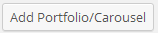
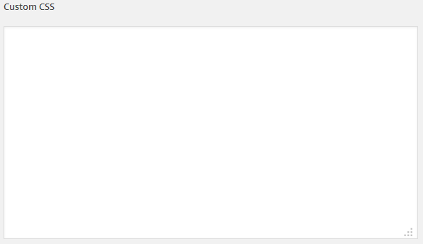

AD Portfolio is an
Wordpress Galleries Portfolio and Carousel Plugin. You can create a portfolio gallery with one click.
AD Portfolio includes 5 styles and 23 presets of portfolio.
- Create Fully responsive portfolios
- 5 Styles - 23 Presets
- Create a Portfolio with shortcode button
- Carousel
- Css3
- Cross browser
- Compatible Wordpress 3.8, 3.7.x, 3.6.x and 3.5.x
- Translation Ready (include file .po/.mo)
-
Download the ZIP package from Codecanyon and Unzip it.
-
Within the unzipped folder you will see a file named
adportfolio1.2.zip - this is the Plugin itself.
-
Log into your Wordpress Dashboard and click on
Plugins.
-
Next click on
Install Themes then click on Upload.
-
Click
Add new -> Upload -> Browse then locate the file named adportfolio1.2.zip and click Install Now.
-
After the theme has installed click on
Activate Plugin and you are all set! New ADPortfolio Plugin is now installed!
-
Go to pages or post
-
ADD New/Edit Page:
- Push ADD Portfolio button in editor

- Check Portfolio
- Select Your Favorite Style
- Select Category (Multiple category is allowed)
- Number Post Load (Leave empty for all post)
- Link Position: overlay/image
- Link Format: yes/no
- Link Post/URL: yes/no
- Link Target: yes/no
- Title: yes/no
- Date: yes/no
- Text: yes/no
- Number Text Excerpt: insert number Excerpt
- Push insert Shortcodes
- Now the portfolio is created
-
Go to pages or post
-
ADD New/Edit Page:
- Push ADD Carousel button in editor
- Check Carousel
- Select Your Favorite Style
- Select Category (Multiple category is allowed)
- Number Post Load (Leave empty for all post)
- Post Visible: insert post visible on load
- Carousel Autoplay - Insert timeout (0 for no autoplay)
- Carousel Carousel Navigation Active: yes/no
- Carousel Carousel Navigation Display Position: yes/no
- Carousel Carousel Navigation Position: yes/no
- Push insert Shortcodes
- Now the carousel is created
- Go To AD Portfolio

- Add CSS Custom